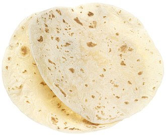

A flour tortilla (/tɔːrˈtiːə/, /-jə/) or wheat tortilla is a type of soft, thin flatbread made from finely ground wheat flour. It was originally inspired by the corn tortilla of Mexican cuisine, a flatbread of maize which predates the arrival of Europeans to the Americas. Made with a flour- and water-based dough, it is pressed and cooked, similar to corn tortillas.[1] The simplest recipes use only flour, water, fat, and salt, but commercially-made flour tortillas generally contain chemical leavening agents such as baking powder, and other ingredients.
The flour tortilla is a variant of the corn tortilla. The word tortilla comes from Spanish meaning "small cake". The oldest found tortillas date back as far as 10,000 years BCE and were made of native maize with dried kernels. The corn tortilla was the principal food of the Aztecs and other Mesoamerican civilizations.The flour tortilla is a much more recent invention. It is said by some that flour tortillas originated in the northern Mexican states of Chihuahua, Durango, Sonora and Sinaloa, where the territory is more suited to growing wheat than corn. In recent times, they have become integral to Mexican American (most notably in the form of a burrito), Mexican—and Tex-Mex—cuisine. Mexican Americans talk about the flour tortilla having come from the wheat-filled plenty of the United States. Most often it is attributed to Alta California when California was still part of the Mexican Republic. Most specifically, it is credited to regions of Northern & Central California with the first mass-produced flour tortillas having come from flour tortilla factories in metropolitan Los Angeles. Some have even attributed the origin of flour tortillas to Jewish immigrants of the United States.
Wheat tortillas are a staple of the northern Mexican states (such as Sonora, Sinaloa and Chihuahua) and throughout the Southwestern United States. Tortillas vary in size from about 6 to over 30 cm (2.4 to over 12 in), depending on the region of the country and the dish for which it is intended. Industrially-produced tortillas typically contain numerous chemicals in order to ease the production process, control texture and flavor, and to extend shelf life. Work has been done at Washington State University to develop methods for producing tortillas on a mass scale while still using only whole-wheat flour, water, oil, and salt, with a fermented flour-and-water sourdough starter replacing chemical leaveners.
Today, personal and industrial (Mexican-style) tortilla-making equipment has facilitated and expedited tortilla making. Manually operated wooden tortilla presses of the past led to today's industrial tortilla machinery, which can produce up to 60,000 tortillas per hour. Tortillas are now not only made from maize meal, but also from wheat flour; home-made and store-bought tortillas are made in many flavors and varieties. Tortillas remain a staple food in Mexico and Central America, and have gained popularity and market share elsewhere. In the U.S., tortillas have grown from an "ethnic" to a mainstream food. They have surpassed bagels and muffins, and have now become the number two packaged bread product sold in the U.S (behind sliced bread).[citation needed] The Tortilla Industry Association (TIA) estimates that in the U.S. alone, the tortilla industry (tortillas and their products – tortilla chips, tostada shells and taco shells) has become a US$6 billion a year industry.
Source: Wikipedia - Flour Tortillas